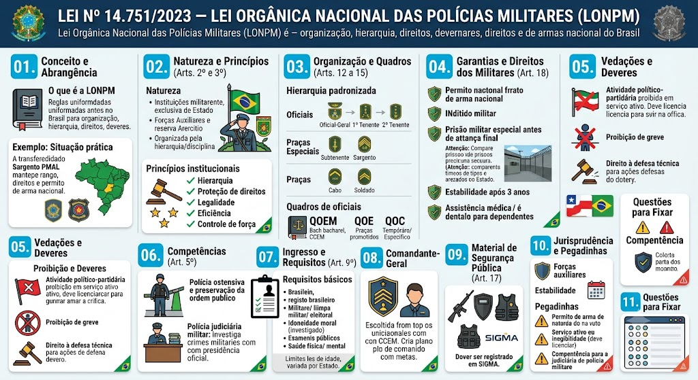

Material de estudo: Lei nº 14.751/2023 — Lei Orgânica Nacional das Polícias Militares (LONPM)
Material complementar · Ver fonte no GitHub
Conceito e Abrangência
O que é a LONPM
A Lei nº 14.751/2023, sancionada em 12 de dezembro de 2023, é a Lei Orgânica Nacional das Polícias Militares e Corpos de Bombeiros Militares. Ela uniformiza as regras de organização, hierarquia, quadros, direitos e deveres dessas instituições em todo o Brasil, substituindo normas estaduais dispersas. Aplica-se a todos os militares estaduais da ativa, da reserva e reformados.
Situação prática
Um Sargento da PMAL é transferido para outro Estado. Com a LONPM, sua graduação, direitos e garantias são reconhecidos nacionalmente, sem necessidade de adaptação local. O porte de arma de fogo que ele possui como militar da ativa é válido em todo o território nacional.
Natureza e Princípios (Arts. 2º e 3º)
Natureza das instituições
As Polícias Militares e Corpos de Bombeiros Militares são:
- Instituições militares permanentes, exclusivas e típicas de Estado;
- Forças auxiliares e reserva do Exército Brasileiro;
- Organizadas com base na hierarquia e disciplina militares.
Princípios institucionais
A LONPM estabelece os seguintes princípios norteadores:
- Hierarquia e disciplina;
- Proteção, promoção e respeito aos direitos humanos;
- Legalidade, impessoalidade, moralidade;
- Eficiência, efetividade, razoabilidade e proporcionalidade;
- Uso racional da força e uso progressivo dos meios.
Organização e Quadros (Arts. 12 a 15)
Hierarquia padronizada
A lei estabelece a padronização nacional dos postos e graduações, dividindo os militares em:
- Oficiais: postos de Oficial-General (quando houver), Coronel, Tenente-Coronel, Major, Capitão, 1º Tenente e 2º Tenente;
- Praças Especiais: Subtenente e Sargento (1ª, 2ª e 3ª classes);
- Praças: Cabo e Soldado (1ª e 2ª classes).
Quadros de oficiais
A lei prevê três quadros principais para oficiais:
- Quadro de Oficiais de Estado-Maior (QOEM): exige bacharelado em Direito e curso de comando e estado-maior (CCEM);
- Quadro de Oficiais Especialistas (QOE): formado por praças que, após curso superior, são promovidos a oficiais;
- Quadro de Oficiais Complementar (QOC): para oficiais temporários ou de áreas específicas.
Quadro de Praças
Quadro de Praças (QP): composto por militares de nível superior (bacharelado), que ingressam diretamente como oficiais ou praças especiais, conforme a formação.
Garantias e Direitos dos Militares (Art. 18)
Garantias fundamentais
A LONPM assegura aos militares estaduais as seguintes garantias:
- Livre porte de arma em todo o território nacional, inclusive na reserva e reforma (art. 18, I);
- Documento de identidade militar com fé pública (art. 18, II);
- Prisão em unidade militar antes do trânsito em julgado de sentença condenatória (art. 18, III);
- Estabilidade após 3 anos de efetivo serviço (art. 18, IV);
- Assistência médica, psicológica e odontológica gratuita, para o militar e seus dependentes (art. 18, V).
Prisão especial x Prisão comum
A prisão em unidade militar é um direito do militar estadual, garantido até o trânsito em julgado da sentença condenatória. Isso significa que ele não será recolhido a presídio comum enquanto não houver decisão definitiva.
Vedações e Deveres
Atividade político-partidária (Art. 35)
O militar estadual da ativa é inelegível. Caso pretenda se candidatar a cargo eletivo, deverá se afastar do serviço ativo (agregado ou licenciado, dependendo do tempo de serviço). É terminantemente proibida a filiação a partidos políticos enquanto estiver na ativa.
Proibição de greve e piquete
É vedado o direito de greve, piquete ou paralisação das atividades aos militares estaduais, por se tratar de serviço essencial e típico de segurança nacional e pública. A violação dessa vedação sujeita o militar a processo administrativo disciplinar e penal.
Direito à defesa técnica
O militar tem direito a assistência jurídica gratuita pelo Estado ou defensoria/órgão próprio quando responder a processo penal ou administrativo decorrente do estrito cumprimento do dever legal.
Competências (Art. 5º)
Polícia ostensiva e preservação da ordem
Compete às Polícias Militares, como polícia ostensiva, a preservação da ordem pública, a segurança de pessoas e patrimônio, e a atuação preventiva e repressiva em situações de conflito, calamidade e crise.
Polícia judiciária militar
A lei reforça que compete às Polícias Militares a realização da polícia judiciária militar, ou seja, a apuração de infrações penais militares, com a presidência de inquéritos por oficiais da corporação, nos termos do Código de Processo Penal Militar.
Ingresso e Requisitos (Art. 9º)
Requisitos básicos
A LONPM padroniza os seguintes requisitos para ingresso nas corporações militares estaduais:
- Ser brasileiro;
- Estar em dia com as obrigações eleitorais e militares;
- Possuir idoneidade moral, comprovada por investigação social;
- Ser aprovado em concurso público de Provas ou de Provas e Títulos;
- Atender aos requisitos físicos, mentais e de saúde previstos em edital.
Limite de idade
A LONPM não fixa limite de idade máximo para ingresso no Quadro de Oficiais de Estado-Maior (QOEM), cabendo às leis estaduais e editais estabelecerem os critérios. Para os demais quadros, os Estados podem estabelecer idades máximas conforme suas realidades.
Comandante-Geral
Escolha e atribuições
O Comandante-Geral da Polícia Militar é escolhido entre oficiais do último posto que tenham concluído o Curso de Comando e Estado-Maior (CCEM). Deve apresentar, em até 60 dias, um plano de comando com metas, indicadores e prestação de contas, renovável anualmente.
Material de Segurança Pública (Art. 17)
Armas e equipamentos
As armas e munições utilizadas pelas PMs devem ser cadastradas no SIGMA (Sistema de Gerenciamento Militar de Armas). Incluem armamentos, munições, explosivos, blindagens e equipamentos menos letais.
Jurisprudência e Pegadinhas
Forças auxiliares e reserva do Exército
As PMs continuam sendo forças auxiliares e reserva do Exército Brasileiro, nos termos do art. 144, §6º, da CF, organizadas com base na hierarquia e disciplina. A LONPM apenas consolida essa natureza.
Estabilidade e estágio probatório
A estabilidade do militar de carreira é conquistada após 3 anos de efetivo serviço, período que corresponde ao estágio probatório, durante o qual o militar é avaliado em seu desempenho funcional.
Pegadinha: porte de arma
O porte de arma para militares da ativa, reserva e reforma é livre e válido em todo o território nacional, dispensando a autorização da Polícia Federal (art. 18, I).
Pegadinha: inegibilidade e filiação partidária
O militar da ativa é inelegível; a filiação partidária é proibida. Para concorrer, deve se afastar (licenciar-se) do serviço ativo.
Pegadinha: polícia judiciária militar
As PMs têm competência para presidir inquéritos policiais militares (IPMs) e apurar crimes militares, sendo a polícia judiciária militar uma atribuição expressa da LONPM.
Mapa-mental
Mapa-mental
